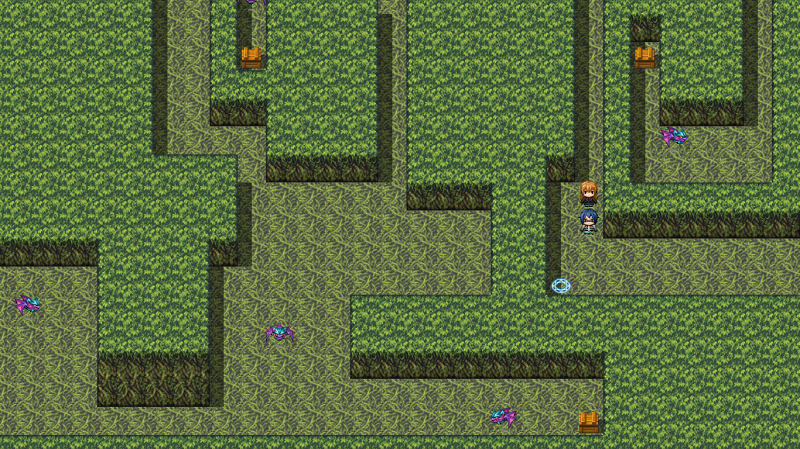
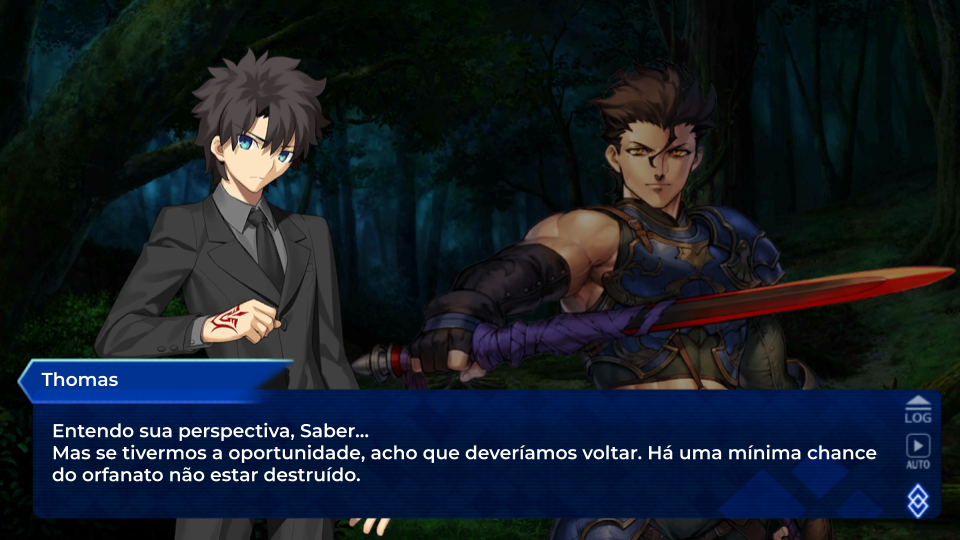

Crystal Resonance
- 2018-2020, em produção - Jogo eletrônico de RPG, onde o jogador pode se transformar em outros cinco personagens com jogabilidades e habilidades diferentes. Cargo: Lead Programmer 
Fate/1890
- 2020, em produção - Fan-Comic da série Fate, onde a Primeira Guerra do Santo Graal de Fuyuki acontece em um universo alternativo. Cargo: Escritor e Editor 